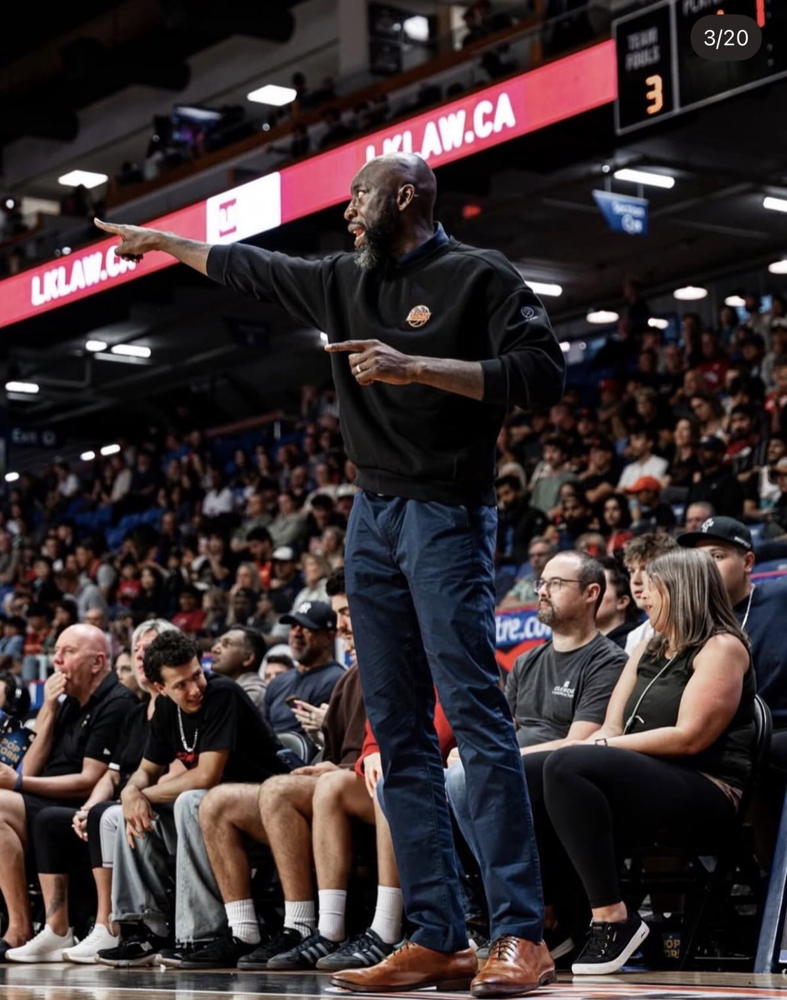

The Roots
Work Creates
Transformation.
The story and philosophy behind WCT Hoops — where it started, why it exists, and the standard it's built on.
The story and philosophy behind WCT Hoops — where it started, why it exists, and the standard it's built on.

Owner / Founder / Head Coach
Ransford's basketball journey began in Grade 9 when he was cut from his high school team. The disappointment became motivation — he spent countless hours in the gym, determined to develop and prove himself. That work eventually led to a career spanning more than 20 years, from NCAA Division I to professional basketball overseas to representing Canada internationally.
Today, Ransford brings everything he learned through his playing career into coaching and player development. The lessons are the same ones that shaped his own journey: preparation, discipline, consistency, attention to detail, and accountability. But now, the goal is bigger than his own career — it's about helping the next generation.
WCT Hoops was created in 2020 by Ransford Brempong and Jarryn Skeete with a simple goal: to add value back to the grassroots basketball community. At a time when many were unsure of how to help young athletes continue developing, WCT was created to provide players with a place to train, compete, learn, and grow.
WCT has always believed that player development is about more than what happens during a training session. Players need the right environment — people who will challenge them, hold them accountable, and help them understand what it takes to reach their goals. Most importantly, they need guidance from people who have already travelled the road they are trying to navigate.

From the beginning, WCT has looked to create pathways for athletes to sharpen their skills, gain exposure at the highest levels, and connect with mentors who understand the journey. Our goal is to help players maximize every opportunity available to them — whether that means pursuing college basketball, playing professionally, or simply becoming the best player they can be. We don't just train athletes. We help them navigate their journey.
WCT stands for Work Creates Transformation. We believe real development is the result of consistent, intentional work. The hours in the gym matter. The details matter. The habits outside of training matter. Most importantly, the work has to be consistent. There are no shortcuts.
Develop players. Build people.
Our purpose is simple: help athletes become better basketball players while developing the habits and character needed to succeed beyond the game. We want players to leave WCT more disciplined, more confident, more knowledgeable, and better prepared for whatever comes next.
Every player has different strengths, weaknesses, goals, and circumstances. Our approach starts with understanding the player, identifying what needs to improve, and creating an environment that challenges them to grow. We don't believe in simply going through drills — we believe training should have purpose.
Build skills that translate to real basketball. Shooting. Finishing. Ball handling. Passing. Movement. Defence. Every detail matters.
The game is more than physical ability. Players need to understand spacing, timing, decision-making, reads, and how to impact winning. We teach players to understand the game, not just play it.
Growth requires discomfort. Players need to be challenged by people who push them outside of what feels comfortable. Competition exposes weaknesses — and creates opportunities to improve them.
Talent can open a door. Consistency keeps it open. We teach players to take ownership of their preparation, effort, habits, and development.
The basketball journey can be difficult to navigate. Having someone who has already travelled that road can make a difference — honest feedback, perspective, and guidance both on and off the court.
The player you become matters. Respect. Accountability. Work ethic. Discipline. Leadership. These qualities extend far beyond basketball.
Full scholarship to Western Carolina University — five years of NCAA Division I basketball. Team captain for four seasons, Southern Conference All-Rookie Team, and the school's shot-blocking record in his first season.
Six years playing professionally in Germany and Holland. Multiple All-Star selections, All-Defensive Team honours, and Dutch League Defensive Player of the Year — leading the league in rebounds and blocks.
Competed for Canada at the Pan-American Games, Tournament of the Americas, Olympic Qualifiers, and World University Games — against some of the world's best players and programs.
After six years away from the game, Ransford returned to professional basketball at 37 — playing for the St. John's Edge before joining the Vancouver Bandits in the CEBL at age 39. Never a straight path. Always defined by continuing to work.

Ransford now brings everything he learned through his playing career into coaching and player development. The lessons are the same ones that shaped his own journey: preparation, discipline, consistency, attention to detail, and accountability. But now, the goal is bigger than his own career — it's about helping the next generation.
We believe development takes time. It takes work when nobody is watching. It takes consistency when motivation fades. It takes being willing to hear what you need to hear — not just what you want to hear.
Show up. Work. Learn. Compete. Improve. Repeat.
WCT continues to grow through individual training, semi-private development, camps, competitive programs, and mentorship. The methods may evolve. The programs may grow. But the purpose remains the same: add value, create pathways, develop players, build people.